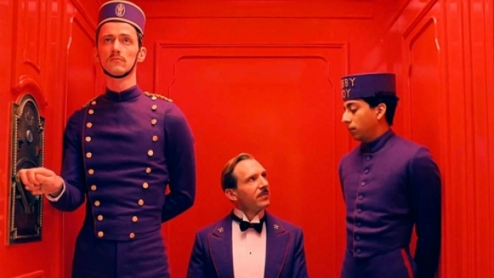

Grand Budapest Hotel
From April 11-16th, more than 100,000 tech heads and industry professionals will descend upon Las Vegas to gorge themselves on the latest cameras, lights and gadgets at the annual NAB Show. Nestled among this digital idolatry, you’ll find at least one psalm to the archaic when cinematographer Robert Yeoman takes the stage to talk the miniatures, stop-motion animation and 35mm photography of The Grand Budapest Hotel.
Yeoman will be featured as part of NAB Show’s Creative Master Series on April 13th in a conversation with American Cinematographer managing editor Jon Witmer titled “Checking into The Grand Budapest Hotel.” Sponsored by the ASC and American Cinematographer, the chat will also delve into Yeoman’s extensive filmography, which includes every live action Wes Anderson film, Gus van Sant’s Drugstore Cowboy and Noah Baumbach’s The Squid and the Whale.
Yeoman talked to Filmmaker about his first visit to NAB, his two new features set for summer release and why he still watches The Conformist annually.
Filmmaker: “Creative Master” is certainly a flattering label to have applied to you. Do you have a sense yet of exactly what you’ll be talking about during your NAB Show conversation?
Yeoman: The main focus is The Grand Budapest Hotel. I’ll be giving everyone a little insight into how we made the movie, but we’ll also be talking about other movies I’ve worked on and then they’ll open it up to questions from the audience. So it’s kind of wide open.
Filmmaker: Have you been to NAB Show before?
Yeoman: This will be my first time so I’m looking forward to it. It’s a chance for everybody in the industry to come together in one place and not only see a lot of the new toys, but have an opportunity to exchange ideas. I think it’s going to be fun.
Filmmaker: Is there any particular new toy you want to get your hands on while you’re there?
Yeoman: The thing that I’m most excited about is seeing ARRI’s new ALEXA 65. I’ve also recently been playing around with LED lighting. It’s something I haven’t used a lot in the past, but I think as I go on I’ll find more and more uses for LEDs. I’m always anxious to check out any new lighting [tools] and to see what the new cameras are doing.
Filmmaker: In terms of box office numbers, Grand Budapest Hotel was by far the biggest financial success of your longstanding collaboration with Wes Anderson. What about that particular film do you think resonated with such a wide audience?
Yeoman: It did seem to hit with audiences better than some of Wes’s other films. I love all of the movies we’ve made together. Each one has its own unique quality to it and I was always a little surprised when certain films didn’t do as well as I would’ve hoped. But I think [The Grand Budapest Hotel] had a very grand scope, Wes and Hugo [Guinness] wrote a really great script that people could relate to and Ralph Fiennes really hit a home run with his portrayal of Gustave. When you combine all those elements, it culminated in what I thought was a really great movie.
Filmmaker: Wes Anderson has cited the films of Ernst Lubitsch as one of Grand Budapest’s inspirations. What were other films you looked at, particularly in terms of using the 1:37:1 aspect ratio for Grand Budapest’s 1930s-set portions?
Yeoman: Grand Hotel was one that we looked at. We looked at all kinds of old movies. I even brought in One From the Heart, which Francis Coppola directed. It was shot in the Academy format and to our knowledge it was one of, if not the, last movie shot in that format. I was also interested in the lighting changes that Vittorio Storaro used in the film, where he would dramatically change the lighting during a shot. We utilized that in the dining room scene where Jude Law and F. Murray Abraham are having a conversation at a table. Just to help emphasize and punctuate certain emotional moments, we would fade lights up or out within a shot.
Filmmaker: Wes Anderson is known for his meticulous preproduction preparation, including making an animatic of the entire film in which he voices all the characters. Can you think of any examples on Grand Budapest where a happy accident managed to find its way through those preconceptions?
Yeoman: I think the weather in certain situations gave us some happy accidents. There was a shot of Willem Dafoe after he kills Jeff Goldblum’s character where he’s standing in a doorway and he picks up Goldblum’s fingers off the ground and walks down the street. Because we were shooting in Germany in the winter, we had a very narrow window of daylight and by the time that we got to that shot — it was the last shot in the sequence — it was pretty much dark and we were trying to light it to make it match with what we already shot. When Wes and I saw the dailies we knew that it really wasn’t quite right. So we went back the next morning and we did the exact same shot, but this time there was this fog that rolled in and it gave it a real spooky quality that hadn’t been there the day before.
Filmmaker: David Fincher is another filmmaker known for his very precise frames, which is why I was surprised to learn that he often reframes shots in post. With symmetry and intricate production design being so important in Wes’s films, does he also do that type of postproduction tinkering?
Yeoman: It’s pretty much all in-camera. I can’t remember any shots he’s ever re-framed in post. We’ve shot all of our movies on film so far and I know David Fincher shoots digitally and he’s able to tweak things a little differently than we do. I think that’s part of his process.
Wes is so specific about his framing and compositions. Sometimes we even take a camera during preproduction and go out and stage scenes without the actors but with ADs or production designers or PAs as stand-ins. It’s something we like to do just to see how it’s all going to play out. I would say 95 percent of the time we know exactly what the shots are going to be before we get to set.
Filmmaker: You have two films currently set to be released this summer – the Brian Wilson biography Love and Mercy and the Paul Feig espionage comedy Spy. The former you shot on film and the latter became your first digitally photographed movie. Why was it important to you to shoot film on Love and Mercy?
Yeoman: For Love and Mercy, my argument was that it was set in an analog time and we should use the medium that best represents that. So I kind of convinced them to shoot film and then I wanted to take it a step further and shoot the 1960s portion of the film on 16mm. I’ve always been a fan of Super 16. We used it on Moonrise Kingdom and I really loved the way it looked. I feel like 16mm has a quality to it that you really cannot get digitally or even with 35mm . I think it lends a certain sense of authenticity that, if it had been shot digitally, it would not have had. The way we were going to shoot the 1960s studio stuff with Paul Dano playing Brian Wilson was to keep it rough and raw — the camera was much more handheld, much looser, the lighting wasn’t quite as precise. And then when [the film moves ahead] to the ’80s with John Cusack [as Wilson], it was all 35mm, much more carefully lit and the camera wasn’t as spontaneous.
Filmmaker: I found an old interview you did with American Cinematographer back when you shot Drugstore Cowboy in which you talk about screening Bernardo Bertolucci’s The Conformist for every director you work with. So did Love and Mercy director Bill Pohlad get a screening?
Yeoman: No. I did that for years, but I don’t anymore. It’s funny, but the last few movies I’ve made – other than Bill Pohlad – have been for either Wes or Paul Feig and I know both of them have seen The Conformist. I love that movie so much and I always thought it would be a good thing for directors to see and, oddly enough, a lot of the directors I’ve worked with over the years hadn’t seen the film. It was just a way to inspire us to reach a little higher visually and go out on a limb a little bit and try things that might be a little unconventional. I’ve watched the movie dozens of times and I still watch it at least once a year. I have it on my iPad so if I’m on an airplane I’ll put on The Conformist. It’s pretty great.
Filmmaker: Your other new movie, Spy, is an action comedy that reunites you with Paul Feig, who you also worked with on Bridesmaids and The Heat. I don’t think people really associate you with action, but you did shoot one of cinema’s all-time great action scenes with the car chase in William Friedkin’s To Live and Die in L.A. Did you enjoy stepping back into that world?
Yeoman: Yeah, it was fun. Paul Feig said he always wanted to make a James Bond movie, but no one would let him. [Martin Campbell’s] Casino Royale was kind of our inspiration for the film. When we were shooting it, we were bouncing back and forth between days with just actors in a room talking and then we’d have days where we’d go outside and have guys shooting guns and car chases and things blowing up. I enjoyed it a lot and I think Paul did too.
Filmmaker: Spy marks your first digitally shot film. How was the experience?
Yeoman: I shot Spy on the ALEXA and it turned out really well. I was very happy with it. The ALEXA is a wonderful camera and they just keep getting better and better. Digital is a lot easier for people and pretty much what you see on the set is what you’re going to get. A lot of directors like that as well and I can’t say I blame them. It must be very comforting to know at the end of the day exactly what you got. I don’t want to sound negative about digital. The cameras have come a long way. I just think it’s unfortunate that film has been taken away so quickly as an option, but people higher on the food chain than me are making those decisions.
Filmmaker: You’ve told this great story before about Wes wanting to shoot anamorphic on Bottle Rocket and the studio being reluctant. So they asked you to shoot tests – which you manipulated by intentionally making the spherical lenses look worse than the anamorphics. Yet when the studio saw those tests, they couldn’t even tell the difference and you were forced to shoot spherical. When you’re dealing with the choice between film and digital now, do you at least feel like you get an informed argument? Or do the people making those decisions not understand the differences?
Yeoman: The decisions are made often before the cinematographer even gets there, and it’s made by accountants and producers who really are not creative. Part of the problem is a lot of the laboratories are closing now, so it becomes a hassle for production to have to ship the film to the lab and it becomes an additional expense and a complication. Of course, producers don’t want to deal with that, so they come up with every possible excuse they can why you can’t shoot film. It’s becoming more and more difficult. You really have to have a powerful director who says, “No, I want film” and who is willing to fight for it and is willing to put up with a certain amount of hassle that comes with that.